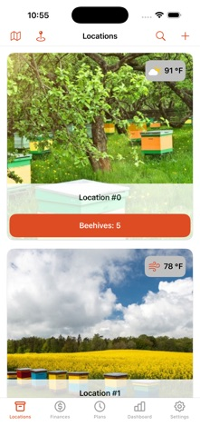
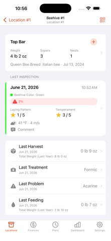
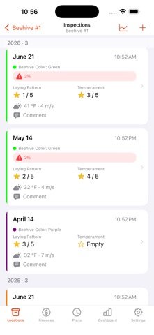

Find the hive. Log the visit.
Open a hive using its QR code or an NFC tag on a compatible iPhone. Use Quick Inspection for a short check, with values from the latest inspection already filled in.
THE BEEKEEPER ASSISTANT · iPHONE, iPAD & MAC
Remember what happened in every hive. Record inspections, feedings and treatments, track your harvests, and plan your next visit — even without a signal.
Download on the App StoreStart free with 1 apiary and up to 10 hives. Optional Pro subscription.

LESS TO REMEMBER IN THE BEE YARD
Open a hive using its QR code or an NFC tag on a compatible iPhone. Use Quick Inspection for a short check, with values from the latest inspection already filled in.
Use the attention filter to focus on hives that need work. Keep inspection details, queen information, photos and recorded problems together.
Add feedings, treatments and plans to multiple hives in one operation. Set reminders so the next job is easier to remember.
Review inspection history, honey harvests and charts. Keep income and expenses alongside your apiary records.
A LOOK INSIDE



IN THE FIELD & BACK AT HOME
Your records are stored locally, so you can use Apiarist at the hive without an internet connection.
Enable iCloud to sync between your Apple devices when connected. With Pro, import and export your data for backups, or export to Excel for a closer look.
Read the privacy policySTART WITH YOUR OWN HIVES
For a small apiary.
For more hives and more ways to use your records.
Monthly and yearly subscriptions. See the current price in your currency inside the app before subscribing.
Plan limits and Pro subscriptions described here apply to iOS/iPadOS 17 and later. The app supports iOS/iPadOS 15 and later; some features depend on your device and OS version.
BEFORE YOUR FIRST INSPECTION
Yes. Apiarist stores your records on your device, so you can view and record your apiary work offline. iCloud synchronisation needs an internet connection.
Yes. Enable iCloud for Apiarist on your iPhone, iPad and Mac using the same Apple Account to sync your records. Record work in the bee yard and review it on your Mac at home.
Yes. On iOS/iPadOS 17 and later, the free plan lets you manage one apiary and up to 10 hives. Pro adds unlimited apiaries and hives, data import/export and audio notes. Subscription prices are shown in the app.
Yes, with Pro. Use data export and import for backups, or export to Excel to work with your records outside Apiarist.
They help you open the right hive record without searching the list. QR lookup uses the camera; NFC lookup requires a compatible iPhone and an NFC tag.
Apiarist runs on Mac with Apple Silicon (M1 or later) and macOS 12 or later. Some features require a newer OS. NFC hive lookup requires a compatible iPhone.
This Apiarist app by Oleg Soloviev is made for iPhone, iPad and Mac. There is no Android version of this app.
English, Chinese (Simplified), Dutch, Estonian, French, German, Hungarian, Italian, Japanese, Norwegian Bokmål, Polish, Portuguese, Russian, Spanish, Swedish, Turkish and Ukrainian.
Email oleg.v.soloviev@gmail.com with your question. Please include your app version and device model if something is not working.
{kind=link}
{kind=link}
{kind=link}